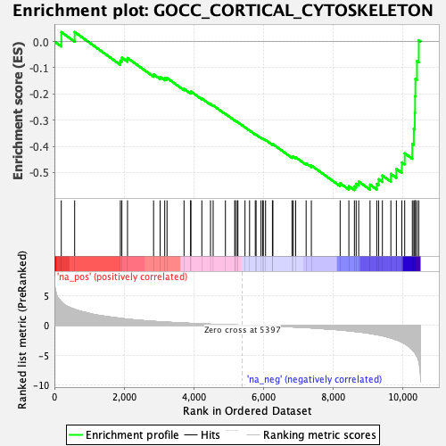
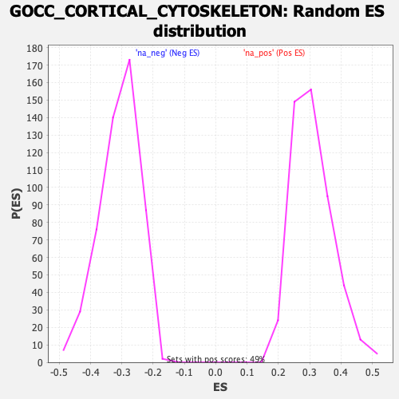

| Dataset | qlf.KOd4vsWTd4_gsea_score |
| Phenotype | NoPhenotypeAvailable |
| Upregulated in class | na_neg |
| GeneSet | GOCC_CORTICAL_CYTOSKELETON |
| Enrichment Score (ES) | -0.5672031 |
| Normalized Enrichment Score (NES) | -1.8392736 |
| Nominal p-value | 0.0 |
| FDR q-value | 0.032040942 |
| FWER p-Value | 0.806 |

| SYMBOL | RANK IN GENE LIST | RANK METRIC SCORE | RUNNING ES | CORE ENRICHMENT | |
|---|---|---|---|---|---|
| 1 | CTTN | 197 | 3.950 | 0.0359 | No |
| 2 | MYO1E | 581 | 2.665 | 0.0362 | No |
| 3 | RDX | 1893 | 1.157 | -0.0732 | No |
| 4 | KRT19 | 1936 | 1.123 | -0.0616 | No |
| 5 | CLASP1 | 2098 | 1.010 | -0.0630 | No |
| 6 | DBNL | 2846 | 0.653 | -0.1254 | No |
| 7 | COTL1 | 3035 | 0.584 | -0.1353 | No |
| 8 | GYPC | 3166 | 0.537 | -0.1403 | No |
| 9 | MAEA | 3232 | 0.516 | -0.1394 | No |
| 10 | MYADM | 3720 | 0.365 | -0.1809 | No |
| 11 | EEF1A1 | 3909 | 0.314 | -0.1945 | No |
| 12 | BSN | 3917 | 0.313 | -0.1908 | No |
| 13 | MAPRE1 | 4231 | 0.232 | -0.2176 | No |
| 14 | MED28 | 4480 | 0.174 | -0.2389 | No |
| 15 | LANCL2 | 4556 | 0.152 | -0.2440 | No |
| 16 | ANLN | 4908 | 0.088 | -0.2763 | No |
| 17 | ACTR2 | 5175 | 0.039 | -0.3012 | No |
| 18 | ACTN4 | 5194 | 0.036 | -0.3024 | No |
| 19 | DLG4 | 5247 | 0.028 | -0.3070 | No |
| 20 | NF2 | 5266 | 0.025 | -0.3084 | No |
| 21 | WDR1 | 5470 | -0.011 | -0.3277 | No |
| 22 | CAPZA2 | 5601 | -0.033 | -0.3397 | No |
| 23 | SLC2A1 | 5765 | -0.059 | -0.3544 | No |
| 24 | TPM4 | 5788 | -0.063 | -0.3557 | No |
| 25 | ERC1 | 5929 | -0.085 | -0.3679 | No |
| 26 | MPP1 | 5977 | -0.093 | -0.3711 | No |
| 27 | WASL | 5995 | -0.096 | -0.3714 | No |
| 28 | ACTB | 6060 | -0.108 | -0.3760 | No |
| 29 | LLGL2 | 6257 | -0.147 | -0.3927 | No |
| 30 | PPP1R9B | 6270 | -0.148 | -0.3918 | No |
| 31 | SNX9 | 6820 | -0.280 | -0.4405 | No |
| 32 | SPTB | 6857 | -0.290 | -0.4399 | No |
| 33 | CAPZB | 6924 | -0.308 | -0.4419 | No |
| 34 | CAP1 | 7224 | -0.391 | -0.4651 | No |
| 35 | LASP1 | 7374 | -0.443 | -0.4732 | No |
| 36 | HCLS1 | 8200 | -0.788 | -0.5412 | No |
| 37 | IQGAP1 | 8451 | -0.942 | -0.5521 | No |
| 38 | DSTN | 8610 | -1.033 | -0.5529 | Yes |
| 39 | ACTN1 | 8660 | -1.065 | -0.5428 | Yes |
| 40 | NUMA1 | 8733 | -1.107 | -0.5344 | Yes |
| 41 | MYH9 | 9058 | -1.361 | -0.5465 | Yes |
| 42 | CORO1A | 9252 | -1.572 | -0.5432 | Yes |
| 43 | EZR | 9306 | -1.627 | -0.5257 | Yes |
| 44 | LLGL1 | 9413 | -1.746 | -0.5116 | Yes |
| 45 | FCHSD1 | 9656 | -2.133 | -0.5052 | Yes |
| 46 | SPTAN1 | 9814 | -2.456 | -0.4862 | Yes |
| 47 | SPTBN1 | 9971 | -2.844 | -0.4617 | Yes |
| 48 | PRKCB | 10053 | -3.078 | -0.4268 | Yes |
| 49 | FLOT2 | 10272 | -4.150 | -0.3901 | Yes |
| 50 | AKAP13 | 10314 | -4.412 | -0.3329 | Yes |
| 51 | FLOT1 | 10344 | -4.611 | -0.2718 | Yes |
| 52 | NSMF | 10351 | -4.648 | -0.2079 | Yes |
| 53 | GSN | 10360 | -4.752 | -0.1428 | Yes |
| 54 | UTRN | 10406 | -5.237 | -0.0746 | Yes |
| 55 | CAPN2 | 10458 | -6.077 | 0.0048 | Yes |
